github入门到上传本地项目
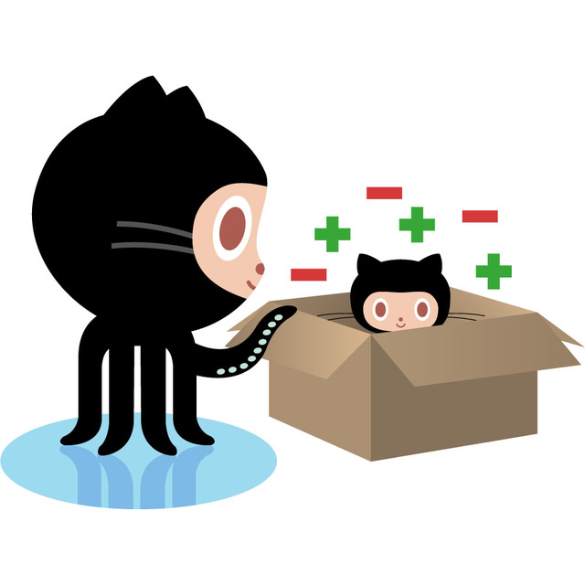
GitHub是基于git实现的代码托管。git是目前最好用的版本控制系统了，非常受欢迎，比之svn更好。
GitHub可以免费使用，并且快速稳定。即使是付费帐户，每个月不超过10美刀的费用也非常便宜。
利用GitHub，你可以将项目存档，与其他人分享交流，并让其他开发者帮助你一起完成这个项目。优点在于，他支持多人共同完成一个项目，因此你们可以在同一页面对话交流。
创建自己的项目，并备份，代码不需要保存在本地或者服务器，GitHub做得非常理想。
学习Git也有很多好处。他被视为一个预先维护过程，你可以按自己的需要恢复、提交出现问题,或者您需要恢复任何形式的代码，可以避免很多麻烦。Git最好的特性之一是能够跟踪错误，这让使用Github变得更加简单。Bugs可以公开，你可以通过Github评论，提交错误。
在GitHub页面，你可以直接开始，而不需要设置主机或者DNS。
对于我来说，我可以在公司和家编辑同样的一套代码了，用U盘或者网盘都好麻烦的说
理论说太多容易忘，来实践实践吧。
大纲：
1-1 登录github
github的官方网址：https://github.com ，如果没有账号，赶紧注册一个。
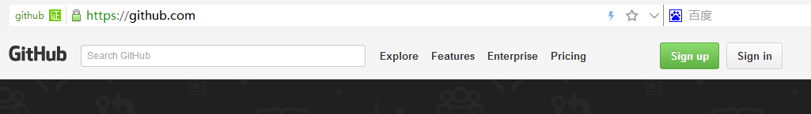
点击Sign in进入登录界面，输入账号和密码登入github。
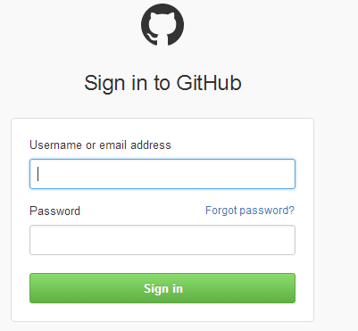
1-2 创建repository(仓库)
为啥要叫repository(仓库)？我起初也纳闷，叫代码库不更简单明了么？ 但仔细一琢磨，仓库一般都是放粮食的吧，这是把代码当作饱腹之物，多有爱，瞬间觉得这冰冷冷的代码充满了查克拉。
扯远了，来看怎么创建仓库，登录后可以看到有repository选项卡
如果没在这个页面也没关系，点击右上角的头像旁边的小三角，展开后可以看到Your profile，点击进入后也能看到repository
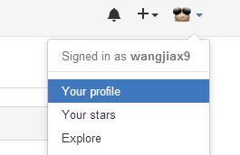
切换到repository选项卡，可以看到很醒目的new按钮。不用犹豫，点击它，开始创建自己的粮仓了。
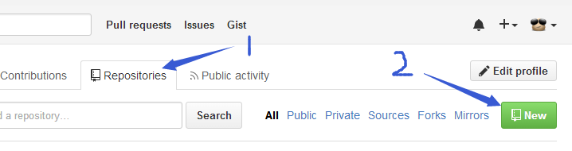
下面是创建仓库信息，只有名字是必填项，现在我创建了一个仓库叫：beautifulDay
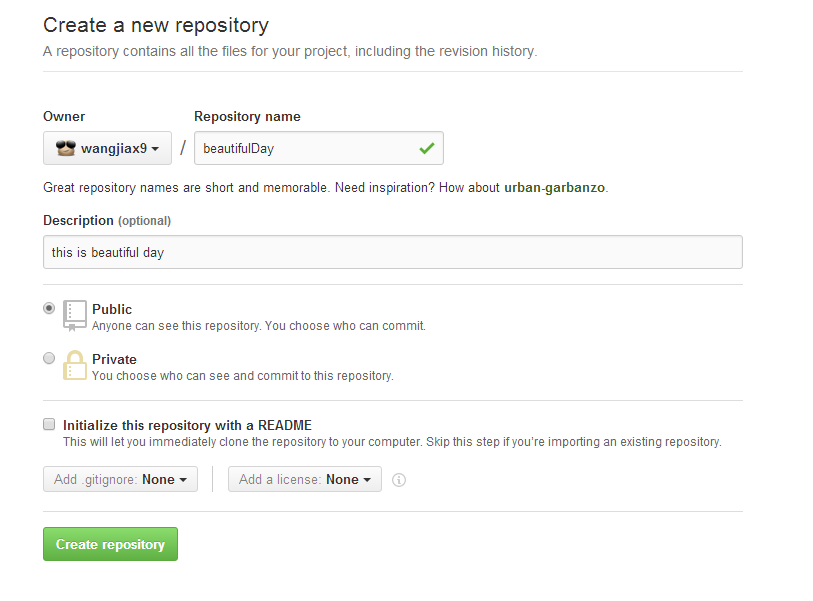
创建成功后，可以看到自己的仓库地址，如此，我的远程免费的仓库就创建了。它还介绍了github仓库的常用指令。这个指令需要在本地安装git客户端。
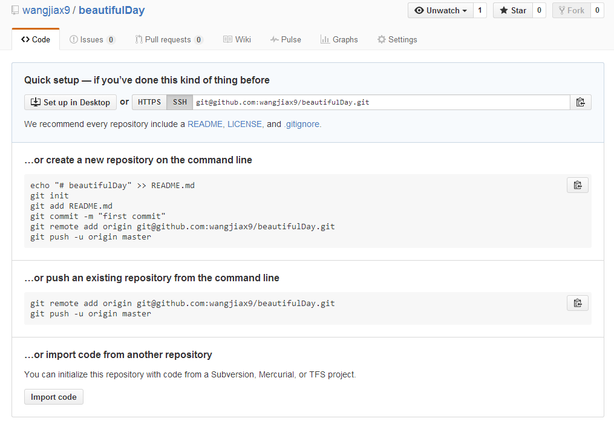
Git是目前世界上最先进的分布式版本控制系统，git与svn的五个基本区别。它有以下特点：
分布式 : Git版本控制系统是一个分布式的系统, 是用来保存工程源代码历史状态的命令行工具;
保存点 : Git的保存点可以追踪源码中的文件, 并能得到某一个时间点上的整个工程项目额状态; 可以在该保存点将多人提交的源码合并, 也可以会退到某一个保存点上;
Git离线操作性 :Git可以离线进行代码提交, 因此它称得上是完全的分布式处理, Git所有的操作不需要在线进行; 这意味着Git的速度要比SVN等工具快得多, 因为SVN等工具需要在线时才能操作, 如果网络环境不好, 提交代码会变得非常缓慢;
Git基于快照 : SVN等老式版本控制工具是将提交点保存成补丁文件, Git提交是将提交点指向提交时的项目快照, 提交的东西包含一些元数据(作者, 日期, GPG等);
Git的分支和合并 : 分支模型是Git最显著的特点, 因为这改变了开发者的开发模式, SVN等版本控制工具将每个分支都要放在不同的目录中, Git可以在同一个目录中切换不同的分支；
分支即时性 : 创建和切换分支几乎是同时进行的, 用户可以上传一部分分支, 另外一部分分支可以隐藏在本地, 不必将所有的分支都上传到GitHub中去;
分支灵活性 : 用户可以随时 创建 合并 删除分支, 多人实现不同的功能, 可以创建多个分支进行开发, 之后进行分支合并, 这种方式使开发变得快速, 简单, 安全。
2-1 下载git客户端
官方下载地址：http://git-scm.com/download/ 根据你自己的系统 下载对应版本，没想到它知道我是Windows ^_^
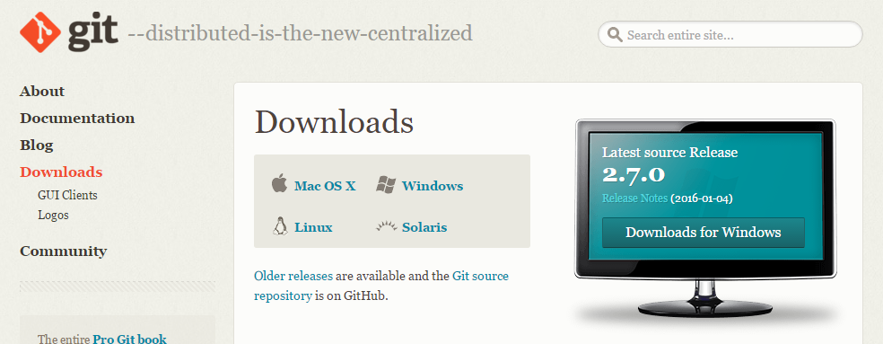
2-2 安装客户端
下载好之后咋们开始安装吧，欢迎界面，下一步。
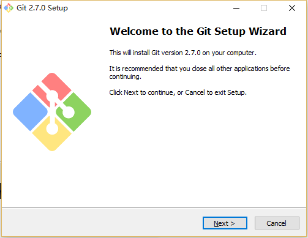
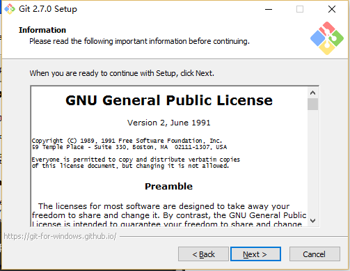
选择安装路径，千万别选带中文的路径，有时候会引起不必要的误会。

选择安装组件，按默认的来就好了。
1）图标组件(Addition icons) : 选择是否创建快速启动栏图标 或者 是否创建桌面快捷方式;
2）桌面浏览(Windows Explorer integration) : 浏览源码的方法, 单独的上下文浏览 只使用bash 或者 只用Git GUI工具; 高级的上下文浏览方法 使用git-cheetah plugin插件;
3）关联配置文件(Associate .git*) : 是否关联git配置文件, 该配置文件主要显示文本编辑器的样式;
4）关联shell脚本文件(Associate .sh) : 是否关联Bash命令行执行的脚本文件;
5）使用TrueType编码 : 在命令行中是否使用TruthType编码, 该编码是微软和苹果公司制定的通用编码;

设置开始菜单中快捷方式的目录名称，默认就好，下一步吧

设置环境变量 : 选择使用什么样的命令行工具, 一般情况下我们默认使用Git Bash即可, 默认选择;
1）Git自带 : 使用Git自带的Git Bash命令行工具;
2）系统自带CMD : 使用Windows系统的命令行工具;
3） 二者都有 : 上面二者同时配置, 但是注意, 这样会将windows中的find.exe 和 sort.exe工具覆盖, 如果不懂这些尽量不要选择;
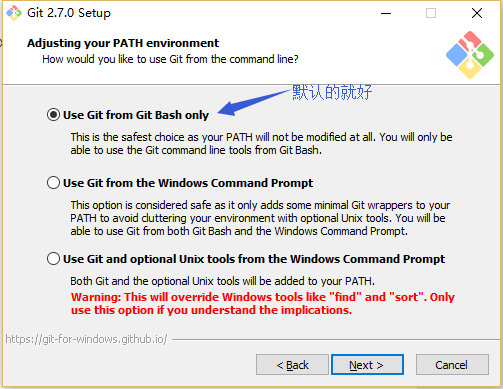
选择换行格式 ，依然是默认就好。
1）检查出windows格式转换为unix格式 : 将windows格式的换行转为unix格式的换行在进行提交;
2）检查出原来格式转为unix格式 : 不管什么格式的, 一律转为unix格式的换行在进行提交;
3）不进行格式转换 : 不进行转换, 检查出什么, 就提交什么;

选择终端模拟器，依然默认就好
1）使用MinTTY，就是在Windows开了一个简单模拟Linux命令环境的窗口Git Bash
2）使用windows的系统的命令行程序cmd.exe

选择默认就好，不用文件系统缓存

安装中……

git终于安装成功咯。
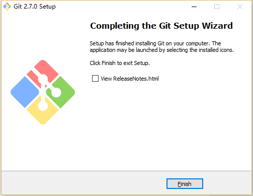
2-3 绑定用户
打开git-bash.exe，在桌面快捷方式/开始菜单/安装目录中
因为Git是分布式版本控制系统，所以需要填写用户名和邮箱作为一个标识，用户和邮箱为你github注册的账号和邮箱
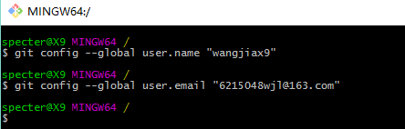
ps：git config –global 参数，有了这个参数，表示你这台机器上所有的Git仓库都会使用这个配置，当然你也可以对某个仓库指定的不同的用户名和邮箱。
众所周知ssh key是加密传输。
加密传输的算法有好多，git使用rsa，rsa要解决的一个核心问题是，如何使用一对特定的数字，使其中一个数字可以用来加密，而另外一个数字可以用来解密。这两个数字就是你在使用git和github的时候所遇到的public key也就是公钥以及private key私钥。
其中，公钥就是那个用来加密的数字，这也就是为什么你在本机生成了公钥之后，要上传到github的原因。从github发回来的，用那公钥加密过的数据，可以用你本地的私钥来还原。
如果你的key丢失了，不管是公钥还是私钥，丢失一个都不能用了，解决方法也很简单，重新再生成一次，然后在github.com里再设置一次就行
3-1 生成ssh key
首先检查是否已生成密钥 cd ~/.ssh，ls如果有3个文件，则密钥已经生成，id_rsa.pub就是公钥
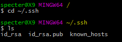
也可以打开我的电脑C:\Users\specter\.ssh 里面找到
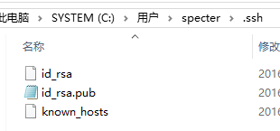
如果没有生成，那么通过$ ssh-keygen -t rsa -C “6215048wjl@163.com”来生成。
1）是路径确认，直接按回车存默认路径即可
2）直接回车键，这里我们不使用密码进行登录, 用密码太麻烦;
3）直接回车键
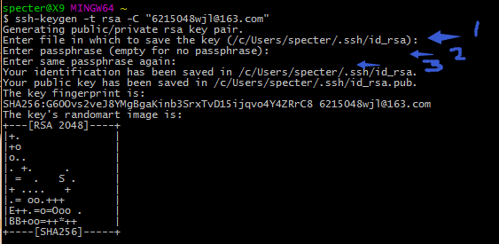
生成成功后，去对应目录C:\Users\specter\.ssh里（specter为电脑用户名，每个人不同）用记事本打开id_rsa.pub，得到ssh key公钥
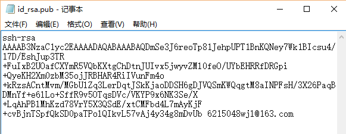
3-2 为github账号配置ssh key
切换到github，展开个人头像的小三角，点击settings
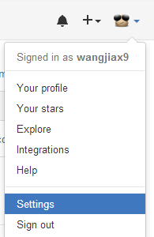
然后打开SSH keys菜单， 点击Add SSH key新增密钥，填上标题，跟仓库保持一致吧，好区分。
接着将id_rsa.pub文件中key粘贴到此，最后Add key生成密钥吧。
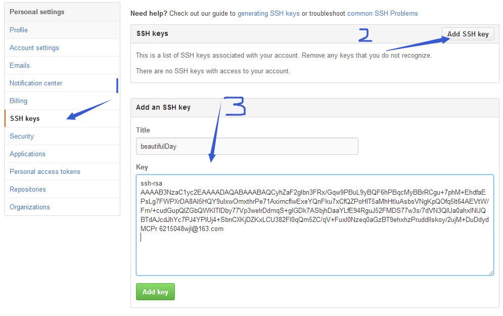
如此，github账号的SSH keys配置完成。
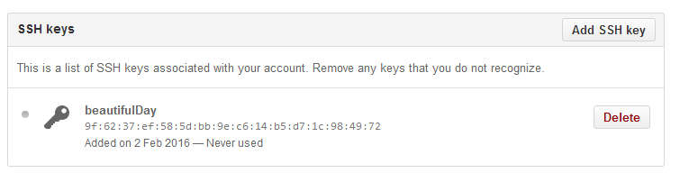
4-1 创建一个本地项目
我这创建了几个空文件夹和一个文件及一个项目配置文件，好多前端项目都这样搭架构，我也追随潮流哈。
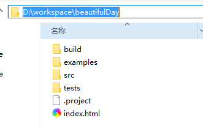
4-2 建立本地仓库
再来复习一下创建新仓库的指令：
首先，进入到beautifulDay项目目录，还记得创建仓库成功后的那个页面吧，指令都在呢。
然后执行指令：git init
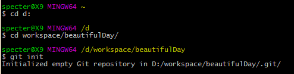
初始化成功后你会发现项目里多了一个隐藏文件夹.git
这个目录是Git用来跟踪管理版本库的，没事千万不要手动修改这个目录里面的文件，不然改乱了，就把Git仓库给破坏了。
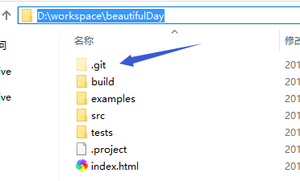
接着，将所有文件添加到仓库
执行指令：git add .
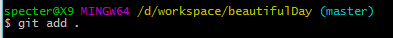
然后，把文件提交到仓库，双引号内是提交注释。
执行指令：git commit -m "提交文件"
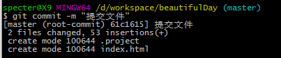
如此本地仓库建立好了。
4-3 关联github仓库
到github beautifulDay仓库复制仓库地址
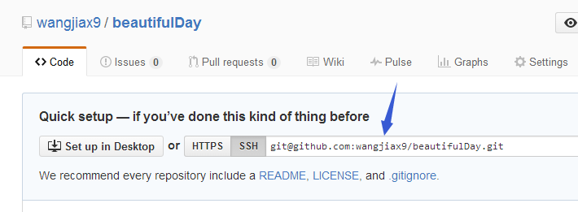
然后执行指令：git remote add origin git@github.com:wangjiax9/beautifulDay.git
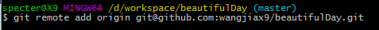
4-4 上传本地代码
执行指令：git push -u origin master
1）敲一个：yes， 然后回车
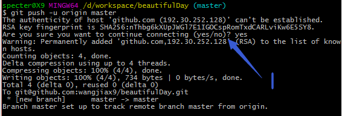
到此，本地代码已经推送到github仓库了，我们现在去githubt仓库看看。
咦！奇怪了，我的目录呢？这个坑突然冒出来是不是印象很深刻呢~
注意咯：git是不能管理空的文件夹的，文件夹里必须有文件才能add
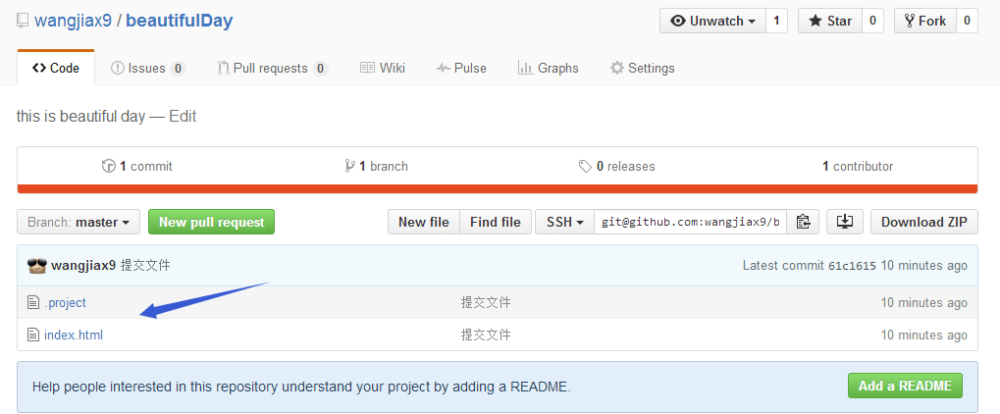
好，我们来试一下，我在examples里新建了一个test1.html文件
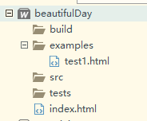
执行指令添加文件->提交文件->推送文件
git add .
git commit -m "提交test1.html"
git push -u origin master
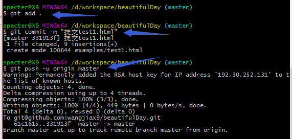
然后刷新一个github，你会看到，examples文件夹出来了。
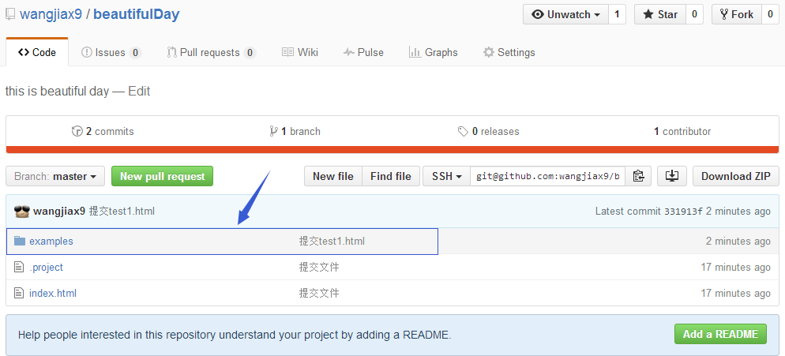
打开examples文件夹，test1.html也在里面。
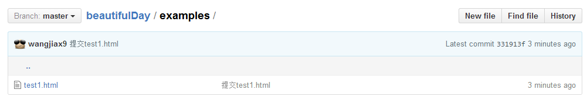
总结：
现在通过博客来将github入门梳理了一遍，印象好深刻，应该不会变成零碎了。如果大家想要知道更多的git操作和知识，推荐去看看缪雪峰的git教程，讲得很详细。
祝大家猴年长得猴美猴美的，挣得猴多猴多的，心情猴好猴好的，运气猴顺猴顺的，睡觉猴香猴香的，爱情猴甜猴甜的，总之，一切都猴蜜猴蜜的!
推荐阅读和参考：